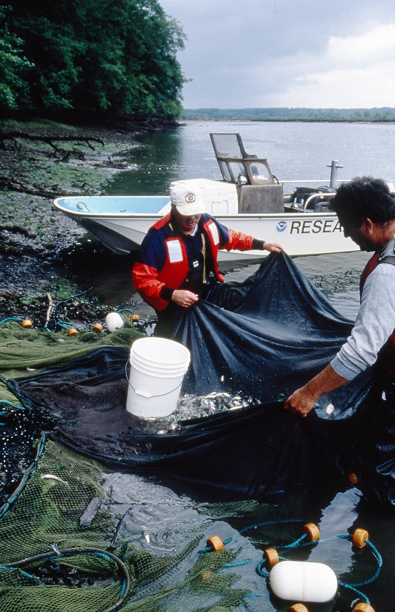
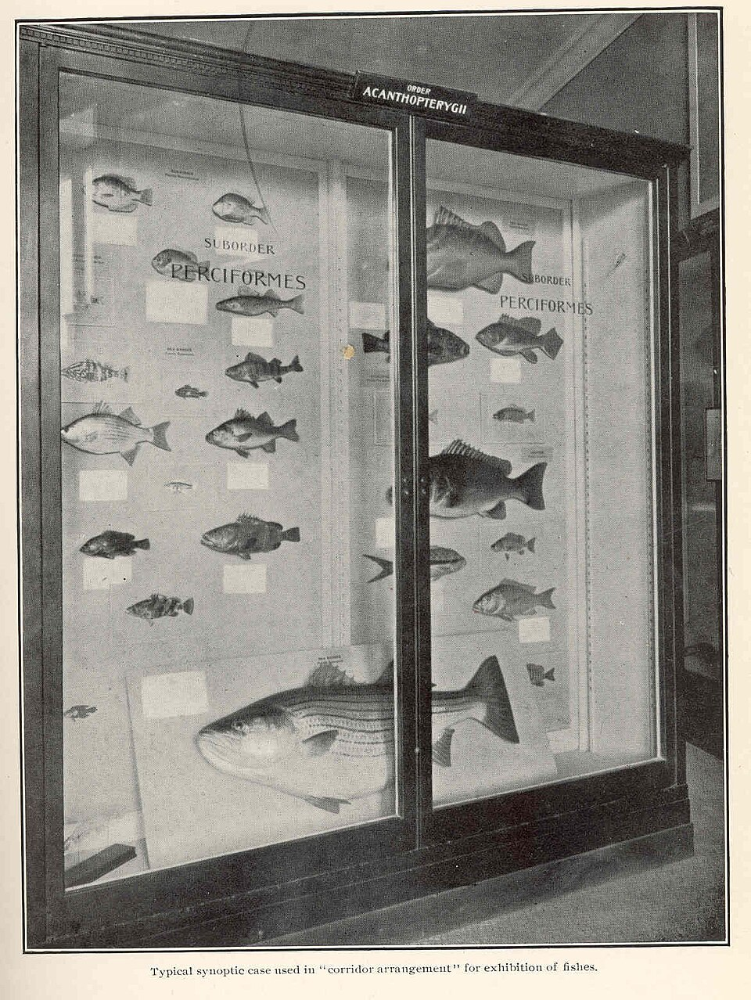

Charles' Website
Career Interest Page
Dream job: icthyologist
Icthyology is a branch of zoology that focuses on fish. An icthyologist studies fish, their behaviour and ecological role, and their growth patterns. This allows people to understand their biology and can also help manage fisheries.
Depending on the exact position, I might:
- Do field work such as collecting samples and assesing sites
- Perform research both outdoors and indoors
- Prepare reports and presentations
- Coordinating fisheries and aquatic ecosystems projects
Prerequisites
Education
- A bachelor's degree in marine biology, marine ecology, zoology, or a related field at minimum
- A master's degree or doctorate (for higher positions)
Other
- Outdoor and labaratory skills
- Being able to record and interpret data
Average salary
Average salaries vary with experience as well as employer. The average range in Canada is around $55,000 to $85,000 per year.
Who I would work for
I might work at:
- A university or research center
- Natural history museums
- Fisheries management agencies
- Zoos and aquariums

